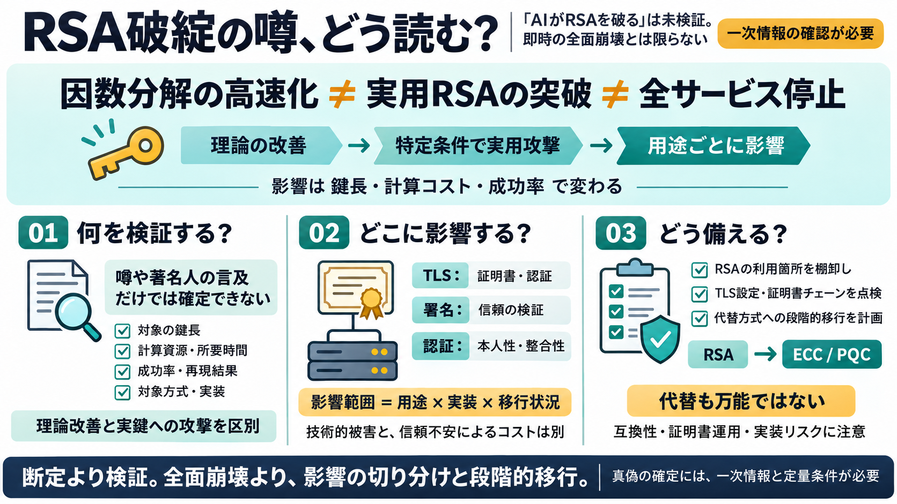

Why 2026 Matters for Quantum Security
The “Year of Quantum Security” reflects increased alignment across standards bodies, governments, and industry stakehold…

RSAは「素因数分解の難しさ」を前提に安全性が設計される（因数分解困難性 / factoring-hardness）。
本題はRedditの二次情報中心で、一次情報（論文・実証）により真偽と影響範囲を切り分ける必要がある。
Reddit投稿：RSAを破れる（因数分解の高速化など）
コメント：Scott Aaronson / Andrew Curran / Aran Nayebi等の話題への接続
TLS・署名・認証でRSA前提が弱まる可能性
検証可能性は「計算量・鍵長・成功率」に依存（理論改善の範囲か、実鍵が対象か）
“break”は effort（努力）の削減として現れることがあるため、被害規模は運用で変わる
証明書署名 / 鍵交換の一部（実装により構成が異なる）
信頼の根拠（証明書が“正しい”ことの検証）
ログイン等での本人性・整合性（authentication）
方式の混在：TLS設定・証明書・クライアント対応で影響範囲が変わる
全面崩壊より「影響を受ける構成→順次置換」が起こり得る
どの鍵長に効くか（例：1024/2048など）
計算量（どれほどのリソースで成功するか）
どの方式/実装に効くか（プロトコル差を含む）
アルゴリズムの改善（まだ“実用の鍵”を狙えると限らない）
特定鍵長・特定条件で現実的に破れる（運用被害が現れる）
信頼不安で取引が一時低下し得る
監査・移行計画の前倒しなどコスト増
確証不足のまま断定が広がると誤誘導のリスク
RSA破りでも直ちに全サービス停止とは限らない（構成依存・併用依存）
“因数分解が速い”＝“RSAが即死”ではない（鍵長・コスト条件が鍵）
証明書運用（CA / 署名）やプロトコル互換が必要
代替方式にも別種のリスク（実装ミス等）が残り得る
計算量・鍵長・成功率が揃わない限り評価不能（暫定は暫定として保持）
“信頼できる人の発言”に波及しても、噂自体は一次情報で検証が必要
現場は運用で決まる：TLS設定・証明書チェーン・移行期限を点検対象にする
壊れ方は段階的になり得る／RSAは一本ではない
一次情報で鍵長・コスト・対象方式を定量確認し、影響範囲を用途別に評価する
The “Year of Quantum Security” reflects increased alignment across standards bodies, governments, and industry stakehold…
Post-quantum cryptography (PQC) is transitioning from theoretical research to a critical pillar of next-generation cyber…
Critically, large language models, irrespective of parameter count or reasoning depth, cannot execute quantum algorithms…
MCLEAN, Va. & BEDFORD, Mass., May 28, 2025--(BUSINESS WIRE)--The Post-Quantum Cryptography Coalition (PQCC) released its…
Challenges Significantly Large Key Size and Implications on Performance Implementation Challenges Difficulty in Encr…